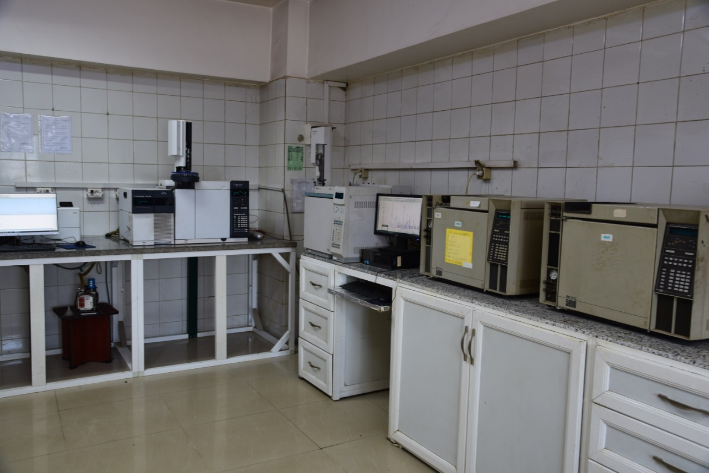
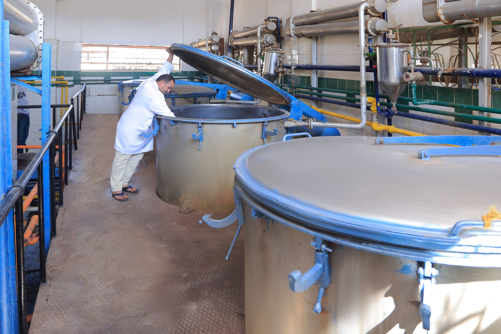

Every batch of PHATRADE essential oils is produced and verified against internationally
recognised food-safety and quality standards, from cultivation through to shipment.
Our Certifications
Internationally Certified
PHATRADE holds recognised certifications that validate our food-safety management,
traceability systems, and suitability for global markets.
FSSC 22000 Certified
FSSC 22000 is a GFSI-recognised food safety management certification scheme built on
ISO 22000. PHATRADE's FSSC 22000 certification confirms our food safety management
system is independently audited and benchmarked against the highest international
standards accepted by global retailers and manufacturers.
ISO 22000 Certified
ISO 22000 is the internationally recognised standard for food safety management systems.
PHATRADE's certification confirms our end-to-end food safety controls, from raw-material
sourcing through extraction, processing, and packaging, meeting the requirements of global
food, fragrance, and flavour industry buyers.
ISO 14001 Certified
ISO 14001 certifies PHATRADE's environmental management system, demonstrating our commitment
to reducing environmental impact across all operations. Our certified system covers resource
consumption, waste management, and environmental performance at both our Obour City and
Sadat City facilities.
ISO 45001 Certified
ISO 45001 is the international standard for occupational health and safety management.
PHATRADE's certification validates our systematic approach to workplace safety, risk
identification, and incident prevention across all production, extraction, and
laboratory operations.
HALAL Certified
PHATRADE's HALAL certification verifies that selected products are produced in full
compliance with Islamic dietary law, confirming that ingredients, equipment, and
production processes meet HALAL requirements, opening access to markets across the
Middle East, Southeast Asia, and global Muslim consumer segments.
FDA Registered
PHATRADE is registered with the U.S. Food & Drug Administration, allowing our products
to be imported into the United States in full compliance with FDA regulations for food,
flavour, and cosmetic ingredients.
Kosher Certified
Selected PHATRADE products carry Kosher certification, verifying that ingredients,
production processes, and equipment meet Jewish dietary law requirements, opening access
to kosher-conscious markets in food, beverage, and personal care sectors.
SEDEX Registered
PHATRADE is a registered Sedex member and has completed a SMETA (Sedex Members Ethical
Trade Audit), giving buyers transparent access to our labour standards, health and safety
practices, environmental performance, and business ethics record for responsible
sourcing compliance.
EcoVadis Committed
PHATRADE holds the EcoVadis Committed sustainability rating, recognising our commitment
to responsible business practices across environment, labour and human rights, ethics,
and sustainable procurement. EcoVadis is the world's largest and most trusted
provider of business sustainability ratings.
In-House Testing
GC Laboratory
Our on-site Gas Chromatography laboratory provides independent verification of purity
and chemical composition for every product we produce. No outsourcing, no delays.
3GC Analysis Units
100%Batches Tested
0Outsourced Tests
GC Analysis covers:
Chemical purity & absence of adulterants
Key constituent compound percentages
Consistency against reference chromatograms
Residual solvents in concretes & absolutes
3 Dedicated GC Analysis Units
Three Gas Chromatography units run continuously, each dedicated to specific product
families. Every batch is analysed against internal reference standards and
international pharmacopoeia specifications before release.
Retained Sample Archive
A reference sample from every production batch is archived under controlled temperature
and light conditions for a minimum retention period. This allows post-shipment
verification and supports swift resolution of any quality dispute.
Batch-Level Documentation
Each batch ships with a Certificate of Analysis (CoA) generated from in-house GC
results. Buyers receive the full analytical report, GC chromatogram, and batch
reference number for seamless supplier-qualification submissions.
International Standards Compliance
All analyses are conducted against recognised international standards including
ISO, IFRA, IOFI, and relevant pharmacopoeia monographs, ensuring results are
accepted by buyers in Europe, North America, the Middle East, and Asia-Pacific.

In-House GC Laboratory — Obour City

Production Quality Monitoring
Farm to Shipment
Batch Traceability
Every PHATRADE batch is traceable through four documented stages, from cultivation
on our own farm to final export, ensuring full transparency for supplier-qualification audits.
1
Farm
Crops including bitter orange flowers, geranium, basil, and violet are cultivated on
PHATRADE's own Sadat City farm. Each harvest lot is assigned a batch ID at the
point of picking.
2
Production
Raw material is processed by steam distillation or solvent extraction. The batch ID
carries forward to extraction records, linking each production run to its source
harvest lot.
3
QC Laboratory
Each batch undergoes GC analysis across three in-house GC units. A retained sample
is stored alongside the batch documentation for future reference and traceability
audits.
4
Shipment
Approved batches are labelled, packed, and documented at our Obour City hub.
Shipping documents reference the original batch ID, providing end-to-end traceability
for every export.